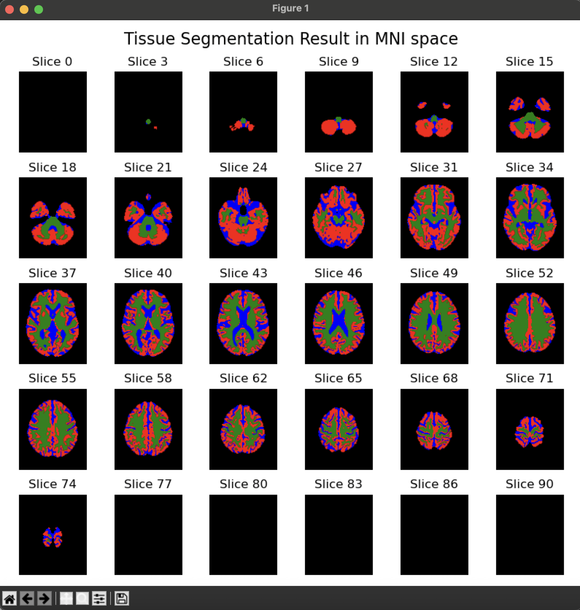

MRI Image Analysis
1. Overview:
OPETIA provides a user-friendly interface for the pre-processing of MRI images, which is essential for accurate analysis in multimodal neuroimaging studies. The tool automates the entire process, ensuring that users do not need extensive technical knowledge to perform complex image analyses. However, all the details of the image pre-processing are provided and can be modified by the user if needed.
Input data:
T1-weighted MRI (T1.nii.gz) (Required for PET image analysis)
or
T2-weighted MRI (T2.nii.gz)
or
FLAIR MRI (FLAIR.nii.gz)
Note
Analysis of T1-weighted MRI is essential for the analysis of PET images in OPETIA.
Pre-processing steps:
All the pre-processing steps are depicted as a flowchart within OPETIA. In brief, the steps include:
Skull stripping (brain extraction)
Segmentation of Gray matter (GM), White matter (WM), and Cerebrospinal fluid (CSF) in the native space.
Non-linear registration to the MNI-152 template (2x2x2mm voxel size)(12 degrees of freedom followed by >12 degrees of freedom)
Registration of GM, WM, and CSF to the MNI-152 space using the transformation matrix obtained from the previous step.
Note
In the OPETIA paper, registration to the MNI-152 template is done using a linear method. However, this has been changed to non-linear registration in the current version of OPETIA.
2. Running the Structural image Pre-processing:
From OPETIA, select the MRI Image Processing tool.

All needed to be done is to input the path to the MRI image (data/subject1/T1.nii.gz or T2.nii.gz or Flair.nii.gz) and click on Process data. All the parameters will be set automatically.
A new folder called OPETIA_output will be created in the subject folder (data/subject1/OPETIA_output), and all the outputs will be saved there.
Note
The logbox prints the log of the pre-processing. If there are any errors, you can read about them in the Terminal.
3. Output files:
All the outputs will be saved in the folder data/subject1/OPETIA_output (automatically created). These include:
MRI_brain.nii.gz: The skull-stripped T1-weighted MRI image in the native space.MRI_brain_mask.nii.gz: The brain mask in the native space.MRI_brain_std.nii.gz: The skull-stripped T1-weighted MRI image in the MNI-152 space.MRI_GM_native.nii.gz: GM in native spaceMRI_WM_native.nii.gz: WM in native spaceMRI_CSF_native.nii.gz: CSF in native spaceMRI_GM_MNI.nii.gz: GM in MNI spaceMRI_WM_MNI.nii.gz: WM in MNI spaceMRI_CSF_MNI.nii.gz: CSF in MNI space
MRI can be t1, t2, or flair depending on your image modality.
4. Quality Control:
By pressing the
Show registration resultbutton, an image will appear containing the MNI-152 template on the background and the pre-processes T1 image as an overlay. The user can visually inspect the quality of the pre-processed image.By pressing the
Show segmentation resultbutton, an image will appear containing the segmented GM, WM, and CSF in different colors. The user can visually inspect the quality of the segmentation.
{kind=link}

{kind=link}
5. Advanced Options:
MRI mage modality: The user can select the MRI modality (T1-weighted, T2-weighted, or FLAIR).Registration class: Can beNonlinearorLinear. Depending on the selection, theregistration typewill adapt.Registration type:
Linear
Translation (shifts): Aligns images by shifting along x, y, z.
Rigid-body (rotation + translation): Aligns with shifts and rotations, preserving shape.
Rigid + uniform scaling (Similarity): Adds uniform resizing to rigid alignment.
Affine: Allows scaling, shearing, rotation, and translation.
Nonlinear
Symmetric normalization (nonlinear warp): Flexible nonlinear warp preserving topology.
Elastic deformation using SyN: SyN with extra elastic deformation for local flexibility.
Nonlinear deformation (no affine initialization): Pure nonlinear warp without affine pre-alignment.
SyN using cross-correlation metric: SyN optimized with cross-correlation similarity metric.
SyN with rigid + affine initialization: SyN with rigid and affine initialization steps.
More aggressive SyN (stronger warps): Stronger SyN warps for high deformations.
SyN optimized for b0-dMRI → T1 registration: SyN tuned for b0-dMRI to T1 registration.